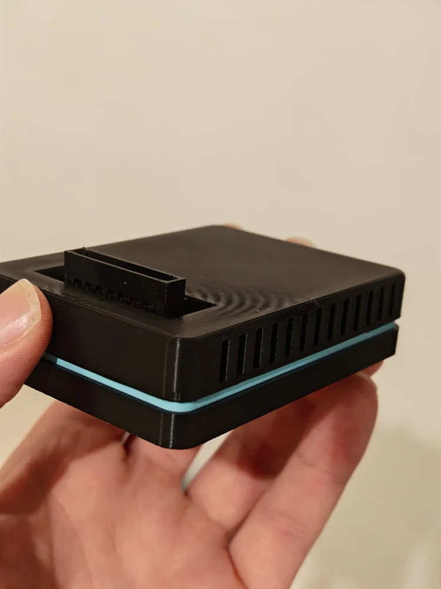
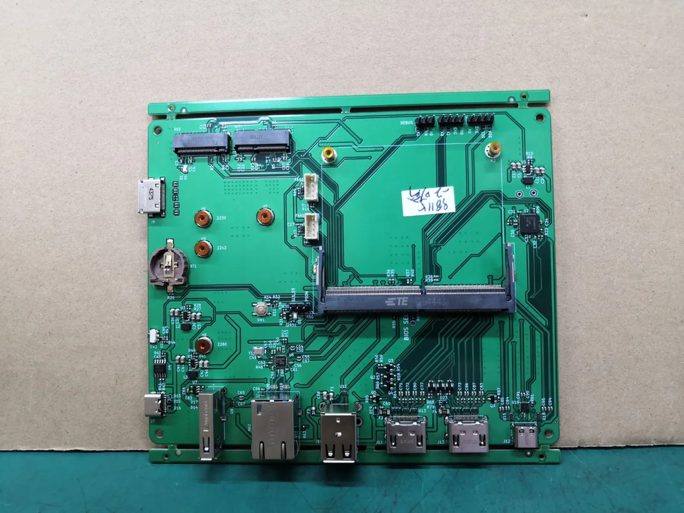

A library built for the controller
Featured and recent games, collections, favorites, title search, game details and library preferences in the Zaman Pegasus theme.
 Try the demo ↗
Try the demo ↗
The Sprint 7 prototype baseline is accepted. The current priority is rigorous testing and fixing reproduced bugs. Future features follow that hardening work.
Working means accepted on specific prototype paths. Under validation needs broader testing. Planned is agreed future work. Exploring has unresolved feasibility or scope. These are development states, not release dates.
Sources: current public component repositories and the accepted Sprint 7 closeout, 19 October 2026. The browser demo is illustrative and does not establish platform compatibility.
Featured and recent games, collections, favorites, title search, game details and library preferences in the Zaman Pegasus theme.
Managed emulator and native-game sessions, a system menu, Resume and confirmed Exit Game. Save and pause behavior remains emulator-specific.
Installed Steam games are exported to Pegasus, with managed launch and return paths that keep the Steam client running. Acceptance covers the tested Q6A configuration, not every Steam title.
Curated ARM64 Linux games, artwork, game galleries, controller browsing, Discover and Activity pages. Game-specific controller readiness is validated individually.
Persistent installation and removal jobs continue after closing Dukkan. Activity, completion notifications and library publication keep the result visible.
Background reception from a stock LocalSend client, a durable inbox, receiving progress and controller-operated destination selection. A transfer above 4 GiB was confirmed on the prototype.
Recommended automatic lookup after classification, manual collection lookup, progress, results and on-screen answers to interactive questions. Lookup uses the existing Skyscraper setup; missing artwork does not block import.
ROM refresh signals are separate from Steam and Native Games refresh. Close the menu to let the library update without interrupting gameplay.
Volume, mute and output selection. Connecting headphones and seeing an audio-route toast was confirmed on the development device.
Wi-Fi connection flows and controller-operated text entry, Bluetooth device management, controller status, and display-mode preview with confirmation/revert.
Toasts, notification history, Do Not Disturb, dismissal and links back to relevant activity. Clearing history leaves pending work intact.
Normalized input, menu/game handoff, reconnect handling and Guide ownership. Steam uses its own Guide path with Start + Select as Zaman’s escape shortcut. Validation is specific to device and transport combinations.
Reboot and shutdown with confirmation and graceful session cleanup on tested paths. Sleep is a separate unfinished capability.
Repeat menu transitions, controller reconnect, multi-controller input, long sessions, interrupted transfers, duplicates, low storage and restart recovery. The accepted Sprint 7 baseline is entering rigorous testing.
Record tested games, emulator builds, settings, pause and save behavior. Installed cores do not establish support for every game or full system compatibility.
A planned Kawn-maintained preview image. Graphics, audio, controllers, emulators and recovery must be qualified on the Pi. No public Zaman image is available yet.
Versioned compatible packages, authenticated releases, visible update progress and tested repair/recovery. First scope targets Zaman components; whole-system atomic updates are separate.
Capture still images, browse them with a controller and export them. Follows the current hardening work.
Begin with read-only browsing and import. General file operations follow validation of navigation and recovery behavior.
Controller access to native emulator settings and save management. Behavior will depend on each supported emulator.
Evaluate a managed PC-streaming client after hardening. Hardware video decoding, latency and local/remote controller ownership must be measured on each board.
Add controller-operated copy, move, rename and deletion after read-only browsing and import are validated. Clear confirmation and recoverable behavior are part of the proposed scope.
Evaluate recording after screenshots, with measured encoding support and impact on gameplay. No recording performance is promised yet.
Evaluate signed image updates, separate persistent data, bounded boot attempts and tested fallback. Depends on a controlled image layout and board-specific boot integration.
Document installation, graphics, audio, input and recovery independently for each port. A running interface is the first milestone toward a complete console experience.
These are placeholders in the current menu. Device suspend/resume and expanded appearance settings need their own implementation and validation.
Built in the open. Photos from the bench as the Core comes together.

Bench photo · soon
Bench photo · soonAccelerated graphics, library, controllers and managed sessions on Dragon Q6A.
system menu polish, notifications, background store transactions and Steam library integration.
Background game transfer, artwork workflows, consistent menu behavior and ROM library refresh.
Reliability testing, reproduced bug fixes and preparation for reproducible releases.